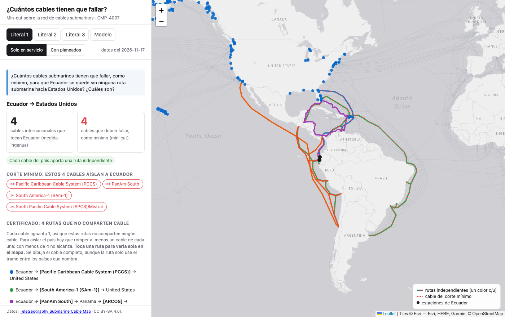

UNIVERSIDAD SAN FRANCISCO DE QUITO
COLEGIO DE CIENCIAS E INGENIERÍAS
CMP-4007 — Algoritmos Avanzados
Resiliencia de la red de cables submarinos con flujo máximo y corte mínimo
Julián León
17 de noviembre de 2026
Código: https://github.com/jjjulianleon/mincutSCM
Demo interactiva: https://jjjulianleon.github.io/mincutSCM/
En este trabajo usé Claude Code (Anthropic), un asistente de IA que funciona como agente, para:
Todos los resultados numéricos provienen de ejecutar ese código sobre los datos de TeleGeography descargados el 17 de noviembre de 2026; ninguno fue escrito a mano ni generado como texto. El código incluye pruebas con los ejemplos de las presentaciones de clase (flujo máximo 5 y corte mínimo 12), y en cada país verifica que el número de cables del corte coincida con el valor del flujo.
Me hago responsable del contenido de este informe y de poder defenderlo oralmente.
Los datos son el Submarine Cable Map de TeleGeography (CC BY-SA 4.0). Para cada cable dan su nombre, si está planeado (is_planned) y la lista de estaciones donde toca tierra, con el país de cada una. No dan la capacidad del cable ni el orden de sus tramos.
| Decisión | Elección y motivo |
|---|---|
| Vértices | Un vértice por país. Supuesto: las estaciones de un mismo país están conectadas por tierra. Las tres preguntas hablan de países. |
| Cables | Cada cable c es un vértice partido en c·in → c·out con capacidad 1 (capacidad en vértices, Erickson §11.2). Para cada país p que toca, se agregan p → c·in y c·out → p con capacidad ∞. |
| Rutas | Una ruta puede pasar por otros países, cambiando de cable dentro de cada país. |
| Cables incluidos | Solo los cables en servicio (is_planned = false) y que tocan al menos dos países. Un cable doméstico no puede formar parte de una ruta entre países. Como comparación, se calcula también el escenario que incluye los planeados. |
| Estados Unidos | Todo lo que el dataset etiqueta United States (incluye Puerto Rico). |
Por qué un cable es un vértice y no una arista. La pregunta cuenta cables que fallan, y un cable que toca varios países falla una sola vez. Si un cable que toca Ecuador, Panamá y EE. UU. se modelara como tres aristas de capacidad 1 (una por par de países), todo corte entre Ecuador y EE. UU. tendría que cortar dos de ellas, y el corte valdría 2 aunque basta que falle un cable. Con el cable como vértice, ese corte vale 1. Las aristas país–cable valen ∞ para que el corte nunca "rompa la llegada" de un cable a un país: solo puede romper el cable completo.
Sea P el número de países con cables internacionales y K el número de cables internacionales en servicio. Sea kc el número de países que toca el cable c. La red tiene |V| = P + 2K vértices y |E| = K + 2·Σc kc aristas. Con los datos del 17 de noviembre de 2026: P = 184, K = 330, |V| = 844 y |E| = 2542. El tamaño de la entrada, n, es (|V|, |E|).
Para cada país p se toma s = p y t = Estados Unidos, y se corre Edmonds-Karp: Ford-Fulkerson que elige siempre el camino aumentante con menos aristas mediante BFS en la red residual Gf (presentación Max-flow, diap. 5). Después se hace una BFS más en Gf. El conjunto S de vértices alcanzables desde s define el corte (S, T), y los cables cuya arista c·in → c·out cruza de S a T son los que hay que romper (presentación Min-cut, diap. 7).
Certificado. Como todas las capacidades finitas son 1, el flujo máximo se descompone en |f| rutas que no comparten cable, y por el teorema de flujo máximo y corte mínimo |f| = c(S, T) (en este caso particular es el teorema de Menger, Kleinberg & Tardos §7.6, (7.45)). Las rutas prueban que con menos de |f| fallas no alcanza, porque cada falla rompe a lo sumo una ruta. El corte prueba que |f| fallas sí alcanzan. El programa comprueba en cada país que el número de cables del corte sea igual a |f|.
Sea g(p) el número de cables internacionales que tocan p (la "medida ingenua").
c·in → c·out de esos cables. Por dualidad débil (Min-cut, diap. 6), |f*| ≤ g(p). Con capacidades enteras, cada aumento sube |f| en al menos 1 y cuesta O(|V| + |E|) (una BFS más la actualización del camino). Por eso Edmonds-Karp hace a lo sumo g(p) aumentos, y una corrida cuesta O(g(p)·|E|) (es la cota O(|E|·|f*|) de Max-flow, diap. 6). La BFS final cuesta O(|V| + |E|).Se escribe O y no Θ porque son cotas superiores: no se demostró que se alcancen. En la práctica, los 183 países se calculan en 1,4 s.
La implementación ordena los vecinos en cada BFS para que los resultados sean reproducibles. Eso agrega un factor logarítmico que el análisis anterior no incluye.
| # | Ruta | Estación en Ecuador |
|---|---|---|
| 1 | Ecuador → [PCCS] → EE. UU. | Manta |
| 2 | Ecuador → [SAm-1] → EE. UU. | Punta Carnero |
| 3 | Ecuador → [PanAm South] → Panamá → [ARCOS] → EE. UU. | Punta Carnero |
| 4 | Ecuador → [SPCS/Mistral] → Chile → [Curie] → EE. UU. | Salinas |
Ningún cable aparece en dos rutas. Cada falla rompe a lo sumo una, así que con 3 fallas siempre sobrevive al menos una ruta.
Después del cuarto aumento ya no hay camino de Ecuador a EE. UU. en Gf. La BFS final alcanza solo a Ecuador y a la entrada de sus cuatro cables, porque los cuatro están llenos. Esos cuatro cables forman el corte, y su capacidad es 4 = |f|.
El programa también calcula el corte mínimo "más cercano a t" (los vértices que llegan a EE. UU. en Gf), y coincide con el anterior.
Ecuador tiene 4 cables internacionales en servicio y hay que romper 4. Cada cable aporta una ruta independiente, así que no hay un cuello de botella escondido: la medida ingenua y el min-cut coinciden. Si se incluye CSN-1 (Ancón), que en los datos figura como planeado para 2026, el resultado sube a 5.
Ojo: SAm-1 y PanAm South llegan a la misma estación, Punta Carnero. El modelo trata sus fallas como independientes, pero un mismo evento local podría afectar a ambos (ver literal 3).

Demo interactiva, Literal 1. Cada ruta se dibuja en su color y los cables del corte llevan un trazo rojo punteado. La demo también recorre los 4 aumentos de Edmonds-Karp paso a paso.
| # | País | Min-cut (cables que deben fallar) | Cables internacionales |
|---|---|---|---|
| 1 | Brasil | 11 | 13 |
| 2 | Colombia | 7 | 7 |
| 3 | Panamá | 6 | 6 |
| 4 | Argentina | 5 | 7 |
| 5 | Chile | 4 | 4 |
| 6 | Ecuador | 4 | 4 |
| 7 | México | 4 | 4 |
| 8 | Uruguay | 4 | 4 |
| 9 | Venezuela | 4 | 4 |
| 10 | Perú | 3 | 3 |
Criterio. Se ordena por min-cut, de mayor a menor. Si hay empate, gana el que tiene más cables internacionales. Si sigue el empate, se ordena por nombre. Chile, Ecuador, México, Uruguay y Venezuela empatan en ambas medidas (4 y 4): son igual de resilientes según esta medida, y su orden entre ellos es solo alfabético.
Lo que el min-cut ve y el conteo no.
México tiene frontera terrestre con EE. UU., pero la pregunta es por rutas submarinas, así que esa conexión no entra en el modelo.
| # | País | Min-cut | Cables | # | País | Min-cut | Cables |
|---|---|---|---|---|---|---|---|
| 1 | Singapur | 27 | 34 | 6 | Malasia | 20 | 20 |
| 2 | Francia | 24 | 24 | 7 | Egipto | 16 | 17 |
| 3 | Reino Unido | 23 | 51 | 8 | Emiratos Árabes Unidos | 16 | 17 |
| 4 | Japón | 23 | 24 | 9 | China | 16 | 16 |
| 5 | Indonesia | 23 | 23 | 10 | India | 16 | 16 |
Se calculó lo mismo para los 183 países con cables internacionales; EE. UU. no participa porque no se puede aislar de sí mismo. El caso del Reino Unido es el que mejor muestra la idea del problema: tiene 51 cables, pero muchos van a Irlanda, la Isla de Man, Guernsey o Países Bajos, y desde ahí siguen por los mismos cables trasatlánticos. Basta romper 23.
Solo en parte. El número es correcto para el modelo: está certificado por 27 rutas disjuntas y un corte de 27 cables. Pero el modelo hace supuestos que lo alejan de la realidad:
En conclusión, el modelo sirve para comparar países y para encontrar cuellos de botella escondidos, como en el Reino Unido o Argentina. Pero el valor 27 de Singapur no debe leerse como "hacen falta 27 accidentes": por las fallas correlacionadas y el tránsito por terceros países, la resiliencia real es menor.